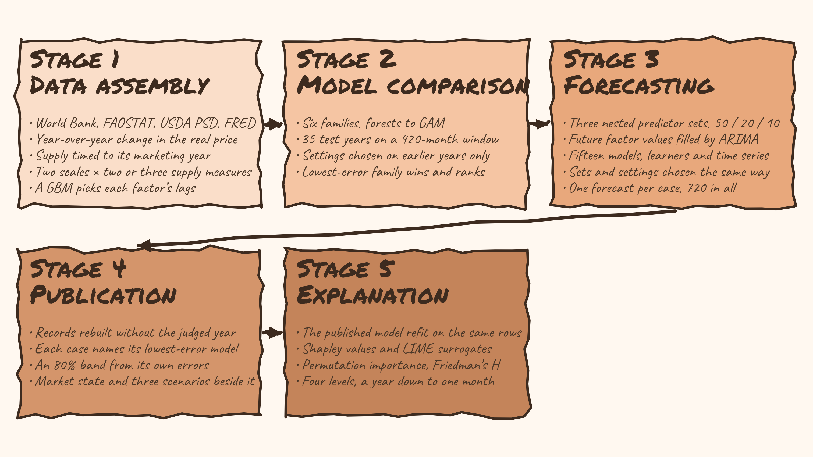

How AGRICAF Works
AGRICAF is a five-stage process that turns raw, publicly available data into price forecasts with plain-language explanations. It starts by collecting and harmonising information from many sources, including trade statistics, production figures, stock reports, and monthly price histories. A screening step then identifies which of those sources actually help predict prices for each commodity, season, and time horizon, discarding the rest so the model is not misled by noise. The forecasting stage runs fifteen statistical and machine learning methods against each other for every commodity, month and horizon, and publishes the one with the lowest past error under its own name, with a band around it showing how wrong that method has been before. Every choice along the way, which factors to keep and which method to trust, is made using earlier years only, so the accuracy on record is the accuracy the procedure would really have delivered at the time. Finally, every forecast is accompanied by an explanation: which factors pushed the price up or down, by how much, and how that compares to historical patterns. These explanations are presented at four levels of detail, from a broad annual overview to a forensic breakdown of a single forecast, so that the results are useful whether you are a policymaker, a researcher, or a market practitioner.
